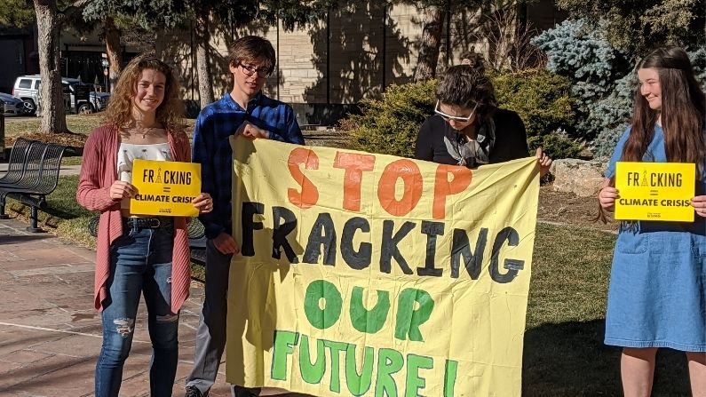

Since 2018...
Senate Bill 19-181Colorado Oil and Gas Conservation Commission (COGCC Update - Switch mission from “foster” to “regulate” oil and gas industry)
2020 New Setbacks COGCC changed setbacks to 2,000 feet
2021 Implementation New Rules came into effect
2022 Denial COGCC shut down a fracking site from being built for the first time in Colorado history, suggesting a shift in public opinion.
